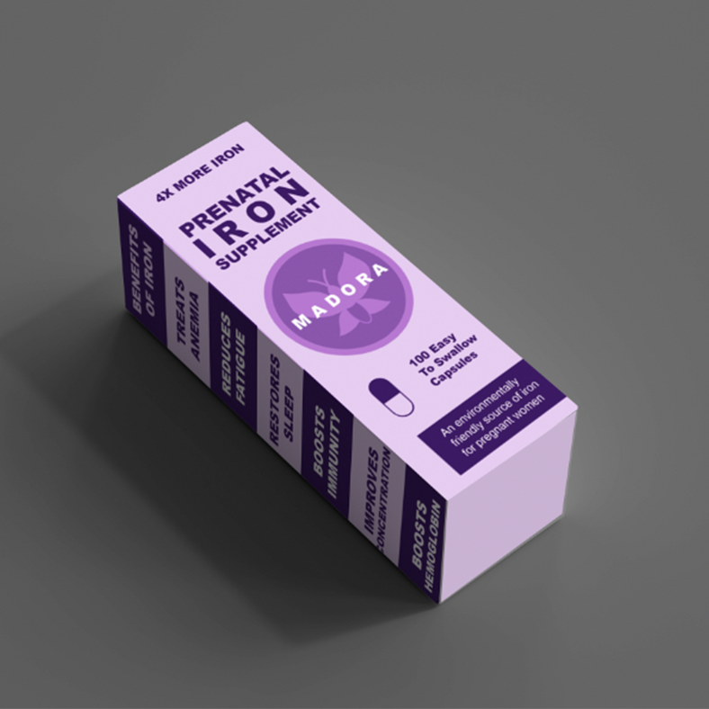
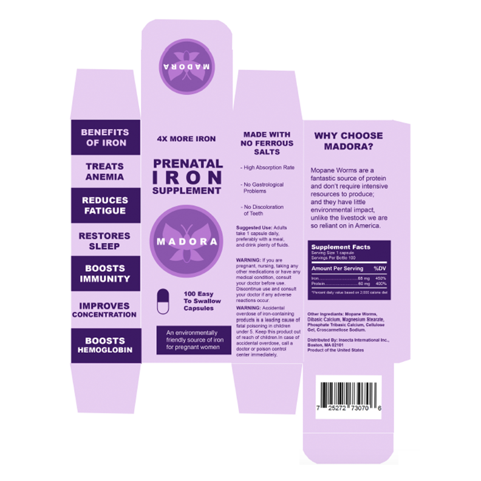

❮
❯
MADORA is a brand I created for my intro to graphic design class. We were assigned a mock client to work with. The client owns Insect International Incorporation and would like the designer to create a product of their choice. The only request from the client was that the product include an insect as its number one ingredient. I chose to use Mopane Worms for the insect of my choice. Mopane Worms have a significant amount of iron in them, and pregnant women are known to struggle with their iron levels, so I decided to create a prenatal iron supplement for expecting mothers made from Mopane Worms. MADORA is unique because it is environmentally friendly and does not require intensive resources to produce. MADORA has 4X more iron than the typical prenatal supplement, plus it is loaded with protein. You can’t go wrong with MADORA.